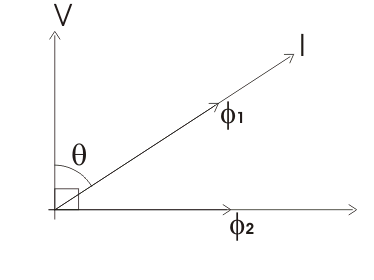

Working Principle of Induction Cup Relay
Construction of Induction Cup Relay
Induction Cup Directional or Power Relay
Reactance and MHO type Induction Cup Relay
Induction Cup Relay
This relay in nothing but one version of induction disc relay. Induction cup relay work in same principle of induction disc relay. The basis construction of this relay is just like four poles or eight pole induction motor. The number of poles in the protective relay depends upon the number of winding to be accommodated. The figure shows a four pole induction cup relay.
Actually when any one replaces disc of induction relay by a aluminum cup, the inertia of rotating system of relay is significantly reduced. Due to low mechanical inertia, the operating speed of induction cup relay is much higher than that of induction disc relay. Moreover, projected pole system is designed to give maximum torque per VA input.
In four pole unit, shown in our example, the eddy current produced in the cup due to one pair of poles, directly appears under other pair of poles. This makes, torque per VA of this relay is about three times more than that of induction disc type relay with a C-shaped electromagnet.
If magnetic saturation of the poles can be avoided by designing, the operating characteristics of the relay can be made linear and accurate for a wide range of operation.
Working Principle of Induction Cup Relay
As we said earlier, the working principle of induction cup relay, is same as the induction motor. A rotating magnetic field is produced by different pairs of field poles. In four poles design both pair of poles are supplied from same electric current transformer’s secondary, but phase difference between the currents of two pole pairs is 90 deg; This is done by inserting an inductor in series with coil of one pole pair, and by inserting a resistor in series with coil of another pole pair.
The rotating magnetic field induces electric current in the aluminum brum or cup. As per working principle of induction motor, the cup starts rotating in the direction of rotating magnetic field, with a speed slightly less than the speed of rotating magnetic field.
The aluminum cup is attached with a hair spring : In normal condition the restoring torque of the spring is higher than deflecting torque of the cup. So there is no movement of the cup. But during faulty condition of system, the electric current through the coil is quite high, hence, deflecting torque produced in the cup is much higher than restoring torque of spring, hence the cup start rotating as rotor of induction motor. The contacts attached to the moving of the cup to specific angle of rotation.
Construction of Induction Cup Relay
The magnetic system of the relay is constructed by attaching numbers of circular cut steel sheets. The magnetic pole are projected in the inner periphery of these laminated sheets.
The field coils are wound on these laminated poles. The field coil of two opposite facing poles are connected in series.
The aluminum cup or drum, fitted on a laminated iron core is carried by a spindle whose ends fit in jeweled cups or bearings. The laminated magnetic field is provided on inside the cup or drum to strengthen the magnetic field cutting the cup.
Induction Cup Type Relay
Induction Cup Directional or Power Relay
Induction cup relay is very suitable for directional or phase comparison units. This is because, besides the sensitivity, induction cup relay have steady non vibrating torque and parasitic torques due to electric current or voltage alone are small.
In induction cup directional or power relay, coils of one pair of poles are connected across voltage source, and coils of another pair of poles are connected with current source of the system. Hence, flux produced by one pair of poles is proportional to voltage and flux produced by another pair of poles is proportional to electric current.
The vector diagram of this relay can be represented as follows,

Here, in the vector diagram, the angle between system voltage V and electric current I is θ
The flux produced due to electric current I is φ1 which is in phase with I.
The flux produced due to voltage V, is φ2 which is in quadrature with V.
Hence, angle between φ1 and φ2 is (90° - θ).
Therefore, if torque produced by these two fluxes is Td.
where K is constant of proportionality.
Here in this equation we have assumed that, flux produced by voltage coil lags 90° behind its voltage. By designing this angle can be made to approach any value and a torque equation T = KVIcos (θ – φ) obtained where θ is angle between V & I. Accordingly, induction cup relays can be designed to produce maximum torque when the angle θ = 0 or 30°, 45° or 60°.
The relays which are such designed, that, they produce maximum torque at θ = 0, is P induction cup power relay.
The relays produce maximum torque when θ = 45° or 60°, are used as directional protection relay.
Reactance and MHO type Induction Cup Relay
By manipulating the electric current voltage coil arrangements and the relative phase displacement angles between the various fluxes, induction cup relay can be made to measure either pure reactance or admittance. Such characteristics are discussed in greater detail in a session on electromagnetic distance relay.
 by
by